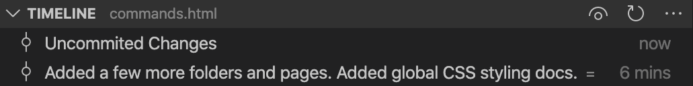
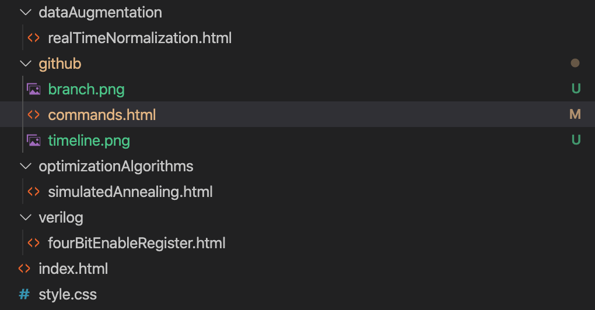

While Google Drive publicized collaborative project work on an unprecedented scale, GitHub is still regarded as an essential software and skill among many employers and coders. Below is a list of commands I find myself needing to remember, somewhat organized in the typical order a project will use them in. All commands can be run in Terminal (Mac/Linux) or Git Bash (Windows).
When using the git terminal on a new computer, you should begin by setting your username and email.
git config --global user.name "YourFirstName YourLastName"
git config --global user.email "yourEmailAddress@emailProvider.com"
If you do not already have a folder containing files for your new GitHub project, go ahead and create one and navigate to it.
cd Documents mkdir myProject cd myProject
If you already have a folder containing your project files, navigate to it.
cd Documents/myProject
To create a repository, run the following command.
git init
To save your files on GitHub's servers (referred to as "pushing to a repository"), you need to run a few commands. To check to see if you have any files waiting to be pushed:
git status
If any files show up in red, they are waiting to be pushed. You can add all files (aka "staging for commit"):
git add .
or add individual files:
git add myFile.txt mySecondFile.txt
If you decide not to save a file:
git rm mySecondFile.txt
Once you are ready to commit for pushing, use the following command with your own description of what you've worked on:
git commit -m "Created a repository and pushed initial files."
If your commit is ready to go, you can go ahead and push:
git push
In most projects, it is a good idea to create branches - especially if there are collaborators involved. Branches allow us to safely alter code files without breaking the master files. I like to create a branch with my name:
git branch andy
To see which branches have been created in your repository:
git branch -a
Now, we can work in my new branch:
git checkout andy
Pushing files to a branch is similar to the process described above. Typically, it will look like this:
git status git add . git commit -m "My message goes here" git push origin andy
Notice the push command has changed a bit - there are origin based branches, and remote branches. Remote branches can be thought of as a sub branch in a different location. Remote branches have yet to be necessary in my projects, so I don't really use them.
You've just surpassed some significant milestone in your project - and it's time to merge your branch into the master branch. Start with switching back to your master branch, and then you can merge:
git checkout master git merge andy
Sometimes, if you have a collaborator who was working in the same files, you may run into code conflicts. Git makes it clear where the conflicts are in the files - you'll just have to go through and delete any code that should not be pushed to master. Once you do, you can run git merge again to see if you addressed all conflicts. Once you've merged, you may with to delete your branch:
git branch -d andy
Primarily, I prefer to work in the MacOS, so Visual Studio is not an option. Visual studio code takes some setting up for languages like c++, but is definitely worth the time. Github and VSCode mesh together extremely well with several features. In the lower left of the window, you can see which branch you are in:
Above that, you can see a timeline of all of your committed versions:
Lastly, in your file tree, you can see color coded and status symbols representative of uncommitted and modified files.
Having not used GitHub for very long, I find myself caught in a branching error where it becomes misaligned from what is on my repository's website. When in doubt, use their website as the true master code. Merging is pretty clear in their website, and doesn't require a learning curve. Sometimes, I find myself in a jam, and deleting and resetting my branches locally isn't syncing things up with the master. The best way to get a clean slate that is synced up with the repository's website, is to delete the repository from your file explorer, and then clone back into it again.